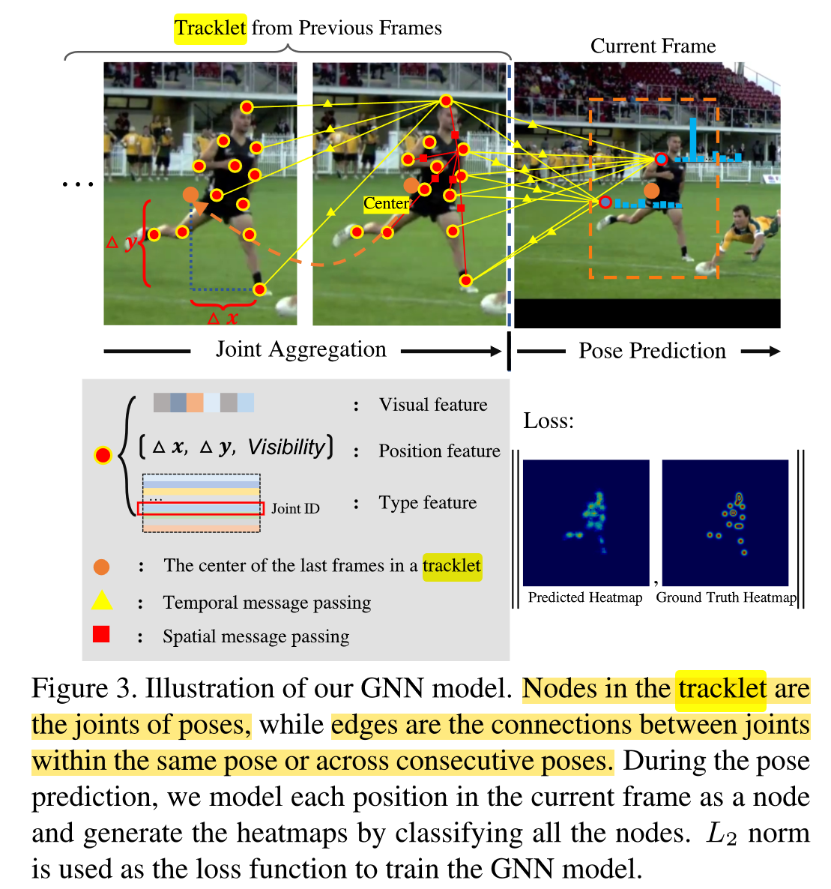

GNN-based Human Pose Estimation (HPE) 论文总结
DGCN: Dynamic Graph Convolutional Network for Efficient Multi-Person Pose Estimation
Summary
- Multi-person.
- Image-based. Graph is just used in their DGCM module.
- Bottom-Up.
-
Basic Hypothesis:
Existing bottom-up methods mainly define relations by empirically picking out edges from this graph, while omitting edges that may contain useful semantic relations.
But actually OpenPose is using the similar idea: “Redundant PAF connections”. The difference is that OpenPose redundant connections are still empirical, while in this paper, they take into account all possible connections between two arbitrary joints, instead of limited amount.
-
Core idea: 本文是一篇基于RGB图片的Bottom-up 2D HPE文章。文中Graph是作为其核心模块DGCM的一部分出现的，且并没有使用GNN。这里的Graph是用来建模joints之间关系的，即摆脱了传统的基于经验的骨骼链接，也不是单纯的基于dataset计算的软性链接，而是将软性链接的值当做伯努利分布中的概率来用，每次随机筛出来几个可能的邻接矩阵来用。本文中所谓Graph的使用其实完全可以被transformer代替，本质上是在建模关节点之间的关联性。
-
Graph:
- Node: Human Joints。
- Node Value: 无。
- Edge: Joints间的全连接。
- Edge Value: 两个joints之间的相关性。
- Output: 一个joints间的邻接矩阵。
- Usage: 用于生成带有随机性的、基于soft adjacency matrix的人类关节点关联矩阵。
Points
-
Bottom-up pose estimation methods try to learn two kinds of heatmaps from the deep neural network, including keypoint heatmaps and relation heatmaps.
-
Soft Adjacency Matrix:
- 基于全部训练集中任意两个joints之间的距离（normalized by scale factor s）的倒数构建软邻接矩阵。
- 由于任意一个点到期自身的距离是0，相应的邻接矩阵值设为1。
- 。
-
Dynamic Adjacency Matrix：
- ，x是数量，是概率，B是伯努利分布。
- 这里的伯努利分布（01分布）实质上就是把软邻接矩阵的值变成了概率。A^(i,j)值越大，概率越大，取1的可能性越大。就这样筛选几次，得到几个可能的邻接矩阵。
-
文中使用了金字塔式多尺度feature map，理由是人的大小远近不一样，多尺度的feature更有适应性。
-
由于邻接矩阵里面每个joint和它自己的relation-term永远是1，就相当于加了一个skip connection一样，不用担心每个joint只被其邻居决定。
-
除了这里提到的动态邻接矩阵，还有一个learnable 的weights，共同起作用。
Learning Dynamics via Graph Neural Networks for Human Pose Estimation and Tracking
Summary
-
Multi-person 2D HPE.
-
Top-Down.
-
Frame-based.
-
Pipeline:
- Current Frame 2D HRNet Branch: Crop Human -> Rescale -> HRNet -> HeatMap-F -> Argmax -> Joints-F
- Historical tracklets GNN Branch: Build Joints based on (Tracklets’ (0~t-1) joints’ + current frames’ all pixels’)(Visual Features, Joint Locations, Joint Type) -> Connect edges in time and space -> GNN -> HeatMap-G -> Joints-G
- Merging: Hungarian(Joints-F, Joints-G) -> If no matching, new ID, output Joints-G; If matched, output argmax(HeatMap-F, HeatMap-G)
-
本文是一个Tow-Down的、基于帧序列（视频）的、2D Multi-Human HPE+Human Tracking的工作。它先用传统的剪裁预测方式预测每帧的所有可能人的可能joints，然后再将每帧每人的每个joint都通过MLP转换为一个个node的feature map，连接这些node，过一个GNN，最后得到最终预测。
-
Graph：
- Node: 已经被追踪的人的所有历史joints(FIFO内的)及当前Frame的所有像素。
- Node Value: 一个基于HRNet输出feature、2D相对位置、joint类型softmax的综合feature map，综合方式是分别过MLP后average。
- Edge: 帧内和帧间分别全连接。
- Edge Value: 无。
- Output: 对于每个此前追踪过的人，输出对其每个关节点在当前帧位置的预测。由于当前帧全图像素都是nodes，所以对于每种joint type，其实输出的相当于一个HeatMap。
- Usage: 通过分析过往最终过的人的历史joints location，以及当前帧的visual feature，预测这些人的每个joint在当前帧的位置。
Question
-
怎么做的tracking？
- 又是匈牙利算法。GNN基于tracklets预测的结果和基于当前帧HRNet预测出来的结果进行matching。其中使用的相似度是基于关键点的位置计算出来的。
-
GNN 基于tracklets历史预测的poses和当前帧通过HRNet预测的Pose是如何结合（Aggregate and Merge）的？
- 先匹配，匹配上的就对heatmap做平均然后argmax。
- 没匹配上的就给一个新ID，直接argmax。
- 对匹配上的人，如果FIFO已经满了，就踢一个加新的；反之直接加了。
For all the matched poses, the joint heatmaps of the two poses are first aligned according to their centers and then merged together by averaging the heatmaps.
-
GNN的edge怎么定义的？
- Edge有两种，一种是同一帧中joints之间的链接，一种是每个joint与上一帧中所有joints的联系（包括当前帧的nodes）。
- 没有具体说edge的值（attr），应该是没有用。
Points
-
每个tracklet都是一个unique的被记录在案的人。
-
对于每个tracklet，都会分别被过一遍一个GNN进行预测。注意，GNN这里也可以理解做是Top-Down的，对于每个历史上记录在案的人，都分别过一遍GNN预测在当前帧这个人每个关节点的位置。
-
GNN的nodes包含某个历史tracklets（追踪的关键点）中的所有joints以及当前帧的所有像素点。
-
当前帧*(t)的每个像素组成的node都与tracklets FIFO中最后一帧(t-1)*的检测结果中的每个joint相连。
 -
之所以要对Visual Features (), Joint Locations(), Joint Type()向量分别做MLP，是因为它们的维度不同，且node的channel不能有多维。
-
为每个node的值。这里的pooling是average pooling。
-
对于而言，全部帧的这个location都以FIFO中最后一帧*(t-1)*中人物中心点为基准进行normalization，当前帧这些nodes也不例外。
-
注意，当前帧*(t)*全像素组成的这些nodes里面，在算时候不加分支，即不用joint type，因为joint type是要predict的东西。
-
最终预测出来的东西是一个Prob，它包含了当前帧t所有像素点可能为某个joint type的概率（classification）。
-
对于每个tracklets，都有一个FIFO队列保存K个过去位置。
Comments
- 非常新颖的使用GNN的方法。用多个方面的features分别过MLP通过average pooling的方法作为node的值，既可以确保这些feature的维度不match不成问题，也可以有效降低channel number，降低cost。最重要的是，对于某些node，你甚至可以移除某些features而不影响整体维度，比如对当前frame像素nodes不添加不存在的类别features。
- 同时也非常暴力，直接在帧内、帧间分别用全连接，且当前frame直接把全部像素点位置都变成node，这是一个巨大的开销，并不优雅，也不符合GNN的内含逻辑。
- 位置norm方法值得学习。
- 我们的项目可能也可以用上匈牙利匹配，但是匹配的是时间上的cluster，而匹配的变量可能是cluster的平均方向向量等。
Context Modeling in 3D Human Pose Estimation: A Unified Perspective
Summary
- Single image-based.
- 2D -> 3D lifting.
- Top-Down.
- 核心操作是一套Attention。首先他们预测出2D Pose，然后将这些Pose投影到3D空间，再用一套Encoder-Decoder网络来预测3D Heatmap。具体来说，每个voxel预测J个值，代表它是某个joint的可能性。而其中关键的Attention部分分为两部分，全局Attention和关节对Attention。前者预测某个voxel 含某个joint 的概率，后者预测当另一个voxel 包含joint 时， 间的关联性。这个关联性来自于训练集上的prior，主要成分是所有物理（经验）肢体连接的距离平均值和标准差，这个关联性高时说明 在当前voxel 中时大概率符合prior中的预测，反之说明这对joints连接的肢体可能过长/短了，所以当前分布可能性很小。
- Graph:
- Node: 所有的voxels。
- Node Value: 来自于2D坐标投影的features。
- Edge: Voxel间的连接。
- Edge Value: Voxel间的关联性（Pairiwise-Attention）。
- Output: 每个3D voxel包含某个joint的概率。
- Usage: 用于从2D预测升维到3D。
- Note: 这里所谓的GNN其实就是ContextPose (Attentions)的一种特例。
Points
- Pairwise-Attention（关节对Attention）的公式是：
- PA被normalized了，具体公式是：, 意味着如果voxel 包含关节 ，那么所有可能包含关节 的voxel 它本身的概率乘以它满足 两个关节点物理距离prior的概率和为1。
Optimizing Network Structure for 3D Human Pose Estimation
Summary
-
本文提出了一种统一模型，它可以将2D->3D Human Pose Lifting的诸多方法（FCN，GNN，LCN）写入一个统一公式中，并取得更优的效果。
-
相比于普通GCN，其特点在于：
- 普通GCN对于所有的node，做Linear的时候都用的共享的weights。
- 而在LCN中，计算每个输入node对输出node的贡献时所用的weights，都分别训练，不共享参数。
-
Graph:
- Node: J个人类Joints。
- Node Value: 2D坐标的features。
- Edge: Joints间的连接。
- Edge Value: Joints间的关联性（邻接矩阵）。
- Output: 每个Joint的3D坐标。
- Usage: 用于从2D预测升维到3D。
Adaptive Hypergraph Neural Network for Multi-Person Pose Estimation
Summary
-
Image-based.
-
Multi-human 2D HPE.
-
Top-Down.
-
文中提出了一种“超边”(Hyperedge)，这种边不是物理的边，也不是非物理但连接两个顶点的边，而是连接了多个顶点、有着类似区分body part作用的“大边”。这种超边的分配由训练好的网络负责，生成的依据是图中的语义关系。比如如果人在拉伸右腿，那右手和右脚踝就会被分配到一个超边中，因为它们有着紧密的语义联系。
-
本文做的是Top-Down的单张图片2D多人HPE。其核心贡献在于提出了“超边”这种由图片语义得来、可连接两个到多个joints的广义边，从而可以更好地应对一些非典型动作的图片。
-
Graph:
- Node: Human Joints.
- Node Value: d dimension feature.
- Edge: m条，为hyperedges。
- Edge Value: 每条超边链接的joints以及链接的紧密程度。
- Output: 一个的矩阵，m是超边的数量，J是关键点的数量。代表着联系的紧密程度。
- Usage: 根据图片信息更好的建立人类关键点间的高维语义联系。
Questions
- Adaptive hypergraph矩阵可以包含可变数量的边。这个是怎么处理的？
- 这个矩阵是如何训练的？输入是什么？
Points
- 对于一层GCN而言，它的forward公式是，这里的代表激活函数，代表被normalized邻接矩阵，是这层GCN的parameter。是feature map，这里代表第层GCN。正常情况下，这个步骤整体都被打包进
pyg.GCNmodule一起做了，但这里我们刚好有现成的邻接矩阵，就不用专门再去构造graph，弄一个专门的edge_index矩阵了，因为就是了。
Learning Skeletal Graph Neural Networks for Hard 3D Pose Estimation
Summary
-
本文提出了一种针对不同距离（hop）的nodes使用不同Aggregation层级的GCN，保证了不同距离的node得以被区分对待，降低远距离node带来的噪音。同时，它还结合了经验人类skeleton和动态可学习skeleton的优点，用同步的两个branch分别运算，进一步提升了基于video的2D->3D HPE Lifting的质量。
-
Graph:
-
Node: J个人类Joints。
-
Node Value: 2D坐标的features。
-
Edge: Joints间的连接。分为两部分，一部分是物理连接，一部分是动态可学习的连接。
-
Edge Value: Joints间的关联性（邻接矩阵）。
-
Output: 每个Joint的3D坐标。
-
Usage: 用于从2D预测升维到3D。
Given 2D keypoints , with N nodes, the model outputs better 3D positions .
-
Points
-
决定文中设计思路的几个重要观察：
- Joints Graph中距离遥远的node虽然有时也会提供有价值的信息，但也导入了许多不相干的噪音。
- 动态Joints Graph的构建很有效，但在不同的动作中joints间的关联性变化很大。所以虽然动态图在表征不同的动作时候很直观，如果只给定单张图，它也很容易受到outlier的影响。所以文中引入了TCN让信息在时间轴上流动。
-
实际设计上，基本是一层D-HCSF一层TCN这样串联。
-
Zoom in，看HCSF层，他们的核心思想是对近程和远程的node区分对待，分不同的层级对待。对于离自己近的node，用类似skip connection的连接直连最后；而离得远的nodes则先分组aggregate几次后再连到主bus上。
-
Dynamic Hierarchical Channel-Squeezing Fusion (D-HCSF) 层的思想：结合了固定skeleton和动态学习skeleton的长处。蓝色是固定分支，橙色是动态。